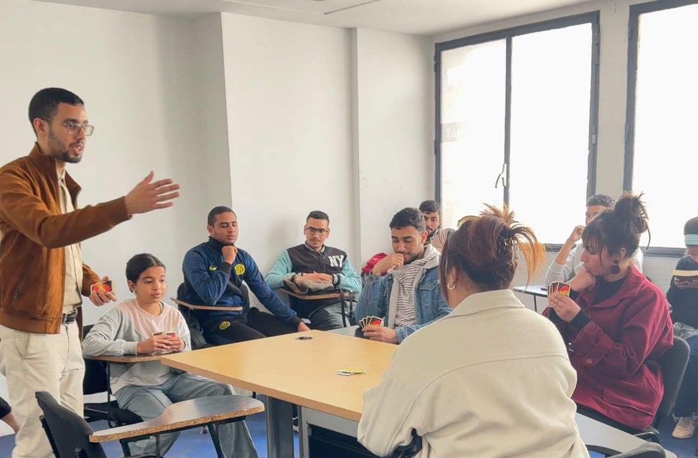
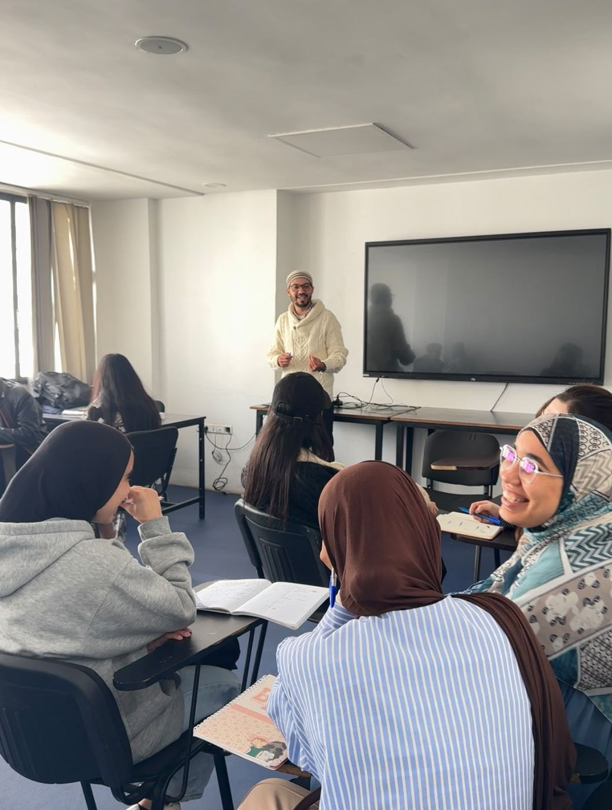
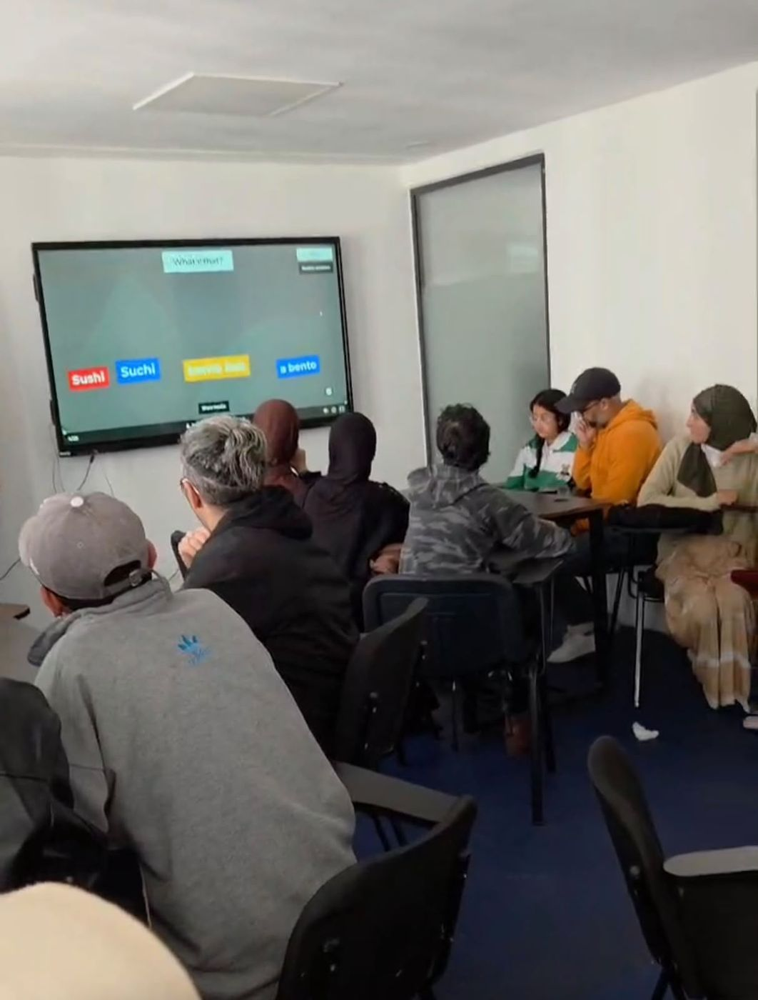
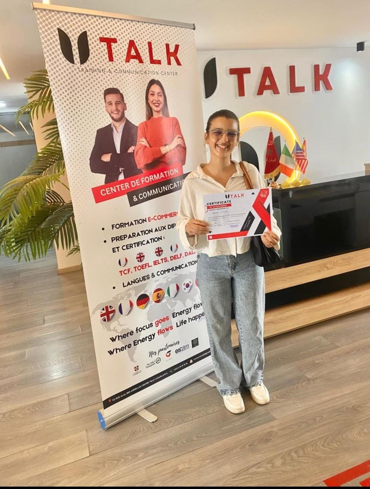

Notre méthode
Learn. Practice. Speak. Improve.
Moins de théorie, plus de pratique : chaque étape vous rapproche de la vraie conversation.

-
01
Learn — en classe
Des cours en petits groupes, avec des professeurs qui adaptent le rythme à votre niveau.
-
02
Practice — à chaque séance
Jeux, mises en situation et activités pour utiliser la langue tout de suite.
-
03
Speak — au TalkLab
Vous échangez dans de vraies conversations et vous prenez confiance à l’oral.
-
04
Improve — chaque mois
Un suivi régulier de vos progrès, pour savoir où vous en êtes et quoi travailler.
Chaque étape, en détail
Ce qui se passe à chaque étape, de la classe à la conversation.
-
01
Learn — en classe
Des cours en petits groupes, avec des professeurs qui adaptent le rythme à votre niveau.
- Petits groupes, pour que chacun participe
- Un programme par niveau, de A1 à C1 (CECRL)
- Des professeurs qui mettent l’oral au centre du cours

-
02
Practice — à chaque séance
Jeux, mises en situation et activités pour utiliser la langue tout de suite.
- Jeux et activités pour retenir sans apprendre par cœur
- Mises en situation : au restaurant, au travail, en voyage
- On utilise ce qu’on vient d’apprendre, dès la même séance

-
03
Speak — au TalkLab
Vous échangez dans de vraies conversations et vous prenez confiance à l’oral.
- Conversations et débats en petits groupes
- Jeux et événements pour parler sans stress
- Ouvert à tous les niveaux

-
04
Improve — chaque mois
Un suivi régulier de vos progrès, pour savoir où vous en êtes et quoi travailler.
- Un point régulier sur vos progrès
- Des retours concrets de vos professeurs
- Le passage au niveau suivant quand vous êtes prêt

They learned. They practiced. They started speaking.
Ce que nos élèves disent de leurs cours et du centre.
-
Avis Google
★★★★★
« Je suis très satisfait des services offerts par U Talk Centre. L’équipe très professionnelle, à l’écoute et toujours disponible pour répondre aux besoins des apprenants. Les formations sont bien structurées, interactives et adaptées à tous les niveaux. C’est un excellent centre pour apprendre les langues dans une ambiance motivante et conviviale. Je le recommande vivement. »
Brahim Boutaouf
-
Avis élève UTALK
★★★★★
« J’aime ce centre parce que les professeurs expliquent bien et encouragent à beaucoup pratiquer. Mon conseil : continuez à motiver les élèves à parler davantage en classe. Merci pour le bon accueil. »
Hamza Aziz
-
Avis élève UTALK
★★★★★
« Personnellement, je trouve que le personnel de ce centre est vraiment sympathique et bienveillant. Merci à toute l’équipe pour vos efforts et votre gentillesse. »
Ilham
-
Avis élève UTALK
★★★★★
« J’ai adoré la façon d’expliquer, les activités et les jeux variés. »
Fatima Zahra